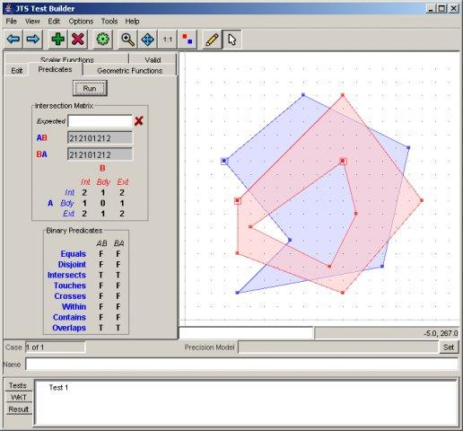

JTS¶
JTS はジオメトリ処理のための空間述語・関数のオープンソースライブラリです。JTS は2次元デカルト平面上の線形ジオメトリ処理のための、完全で、矛盾がなく、ロバスト(堅牢)な基本的アルゴリズムを提供します。
JTS は "JTS Test Builder" という、インタラクティブなデスクトップインタフェースにより、ユーザにジオメトリを用いたテスト実行、試行を可能にするツールを含んでいます。JTS の安定性は広範なテストスイートにより保証されています。
JTS は、大半の Java ベースのオープンソース地理空間アプリケーションで利用されており、JTS の C++ 移植の GEOS は、大半の C ベースのアプリケーションで利用されています。他の移植は、C# と JavaScript で利用可能です。


主な機能¶
ジオメトリモデル (ポイント、ライン、エリア)
ジオメトリ演算 (例: 交差(intersect)、統合(union)、含む(within)など)
精度のハンドリング
ジオメトリ生成
距離計測機能 (例: デカルト2D距離, ハウスドルフ距離)
空間アルゴリズム (例: バッファ作成、ラインオフセット、ライン簡素化)
ジオメトリ算術機能 (例: 角度、距離等)
空間構造 (例: 4分木とR木、ドロネー三角形分割)
入力/出力 (例: WKT、GML)
高精度計算
サポートするフォーマット¶
Well-Known テキスト (WKT) と Well-Known バイナリ (WKB)
GML 2
Java Swing/AWT 書き込み
準拠している標準規格¶
OGC Simple Features for SQL (SFSQL)
詳細¶
Webサイト: https://projects.eclipse.org/projects/locationtech.jts
ライセンス: LGPL
対応プラットフォーム: Windows, Linux, Mac
API インタフェース: Java